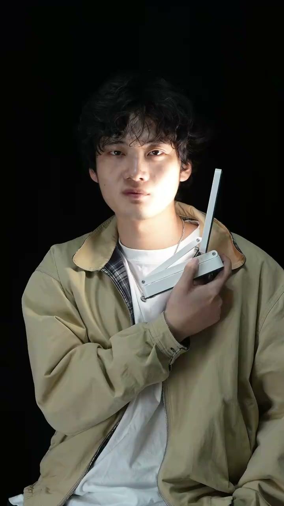
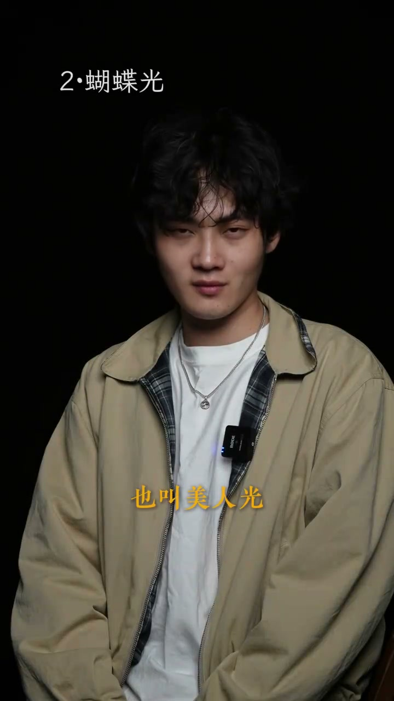
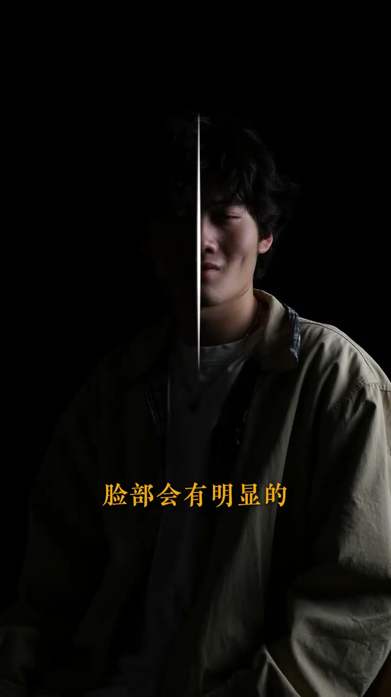
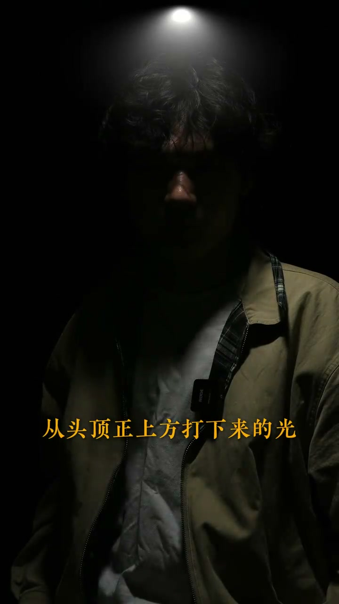

01
中文
只要用一盏台灯，打六种不同的光。
EN
With just one desk lamp, you can create six different kinds of light.
表达提示create light（打光）

Scene English · 摄影 · 人像布光
One Desk Lamp, Six Portrait Lighting Setups
🎧 语音讲解
One Lamp, Six Lights
情境博主用一盏普通台灯演示六种经典人像布光，适合新手快速入门。语域：摄影教学，布光入门。
只要用一盏台灯，打六种不同的光。
With just one desk lamp, you can create six different kinds of light.
表达提示create light（打光）
第一种，伦勃朗光。
First, Rembrandt light.
表达提示Rembrandt light（伦勃朗光）
六种光 → six setups / six looks
伦勃朗光 → Rembrandt lighting / classic portrait light

Rembrandt: The Triangle
情境伦勃朗光的标志是暗部眼睛下方出现倒三角形光区。光源从斜上方45度打下来。语域：摄影教学，布光效果。
光源从斜上方45度打下来，眼睛下方会出现三角光光区。
The light comes down at 45 degrees, creating a triangle of light under the eye.
表达提示at 45 degrees（45度角）
五官会显得立体有质感。
The features look three-dimensional and refined.
表达提示three-dimensional（立体）
三角光区 → triangle of light / catchlight triangle
立体质感 → dimensional / sculpted

Butterfly Light, Beauty Light
情境蝴蝶光在鼻下形成蝶形阴影，是经典的女性人像光。光源从前上方45度打下。语域：摄影教学，经典布光。
第二种，蝴蝶光，也叫美人光。
Second, butterfly light, also called beauty light.
表达提示butterfly light（蝴蝶光）
从前上方45度打下来，鼻子下方会出现阴影，显得更挺拔。
From 45 degrees above the front, a shadow forms under the nose, making it look more defined.
表达提示a shadow forms（出现阴影）
两侧光线偏暗，脸型会更显瘦。
The dimmer light on both sides makes the face look slimmer.
表达提示look slimmer（显瘦）
美人光 → beauty light / Paramount light
显瘦 → slimming / thinner look

Side Light, Dual Nature
情境侧光突出轮廓与情绪，常用于影视作品表现人物的两面性。语域：摄影教学，影视语言。
第三种，侧光，光源从左右正侧面打过来。
Third, side light: the source comes from the left or right side.
表达提示side light（侧光）
脸部会有明显的明暗对比。
The face shows a clear contrast of light and shadow.
表达提示light and shadow（明暗）
在影视作品中，常用来表现人物的两面性。
In film and TV, it's often used to show a character's dual nature.
表达提示dual nature（两面性）
明暗对比 → contrast / chiaroscuro
两面性 → dual nature / two sides

Rim Light, the Silhouette
情境轮廓光从后方来，勾勒主体轮廓制造剪影效果，极具高级感。语域：摄影教学，氛围营造。
第四种，轮廓光，光源来源于后方。
Fourth, rim light: the source is behind you.
表达提示rim light（轮廓光）
可以勾勒出轮廓，制造剪影效果，极具高级感。
It outlines the silhouette and creates a stunning rim effect.
表达提示outline（勾勒轮廓）
剪影 → silhouette / outline
高级感 → premium feel / classy

Top Light, Mystery and Pressure
情境顶光从正上方打下，眼睛陷入阴影看不清眼神，营造神秘和压迫感。语域：摄影教学，惊悚氛围。
第五种，顶光，从头顶正上方打下来。
Fifth, top light: shining straight down from above the head.
表达提示straight down（正上方）
由于看不清眼神了，略带神秘色彩。
The eyes are hard to see, which adds a touch of mystery.
表达提示a touch of mystery（一丝神秘）
会给人很强的压迫感。
It creates a strong sense of pressure.
表达提示a sense of pressure（压迫感）
神秘 → mystery / mysterious aura
压迫感 → pressure / oppressive feel

Underlight, the Horror Look
情境底光从下往上打，阴影朝上显得诡异，常用于恐怖片。语域：摄影教学，恐怖氛围。
第六种，底光，光源从下往上打。
Sixth, underlight: the source shines from below.
表达提示underlight（底光）
多用来制造恐怖的效果和奇怪的内心活动。
Often used to create horror effects and strange inner thoughts.
表达提示horror effects（恐怖效果）
从下往上 → from below / upward light
内心活动 → inner thoughts / state of mind

Did You Get It?
情境复盘六种光的用途，鼓励观众动手尝试。语域：摄影教学，收尾互动。
所以一盏台灯打六种光，你学会了吗？
So one desk lamp, six kinds of light—did you get it?
表达提示did you get it（学会了吗）
学会 → got it / picked it up
说伦勃朗光的特点
说蝴蝶光的别称
说轮廓光的用途
说顶光的效果
六种光靠的是「角度」，不是换灯具。
伦勃朗光的标志是「眼睛下方三角光」。
侧光的核心是「明暗对比」。
顶光营造「神秘与压迫」，不是浪漫。